Causl v0.9.0 Benchmarks
Head-to-head against MobX, Jotai, and Redux Toolkit — the contract-bearing cells, the fast-path wins, the places we still lose, and the post-0.9.0 plan to close the gap.
TL;DR
- causl leads on the transactional-coalesce cells.
batch-commit1.61 ms median vs jotai 4.40 ms / mobx 4.39 ms / redux‑toolkit 3.62 ms — the SPEC §3 outer‑commit boundary is doing the work it's supposed to. scrolling-viewportreversal landed. causl 0.08 ms median, ahead of jotai 0.10 ms, mobx 0.95 ms, and redux‑toolkit 33.37 ms — recovered from the previous 654× regression after the per‑node subscriber index (#671/#738) and the Phase G empty‑deps fast‑path (#704) landed.equality-cutoffstill pays the contract premium. causl 1.40 ms median vs mobx 0.29 ms (~4.83×), well inside the SPEC §17.5 commitment 13 band of 3.0×–8.0×. We out‑run redux‑toolkit (3.96 ms) and jotai (4.56 ms) on the same cell.- Long‑run heap is flat. All four libraries pass the 256 B/commit gate by ∼24× over 100k sequential commits; the causl 1M reference holds 10.33 B/commit. No leak in commit log or subscriber map.
- Post‑0.9.0 plan: re‑tighten the band to 1.0×–4.0×. The Rust engine port (epic #1133) is the path. Bench gate widened to
COV_REGRESSION_DELTA: 0.08(was 0.03) per PR #1149 ahead of the Rust transition — documented in PR #1139's panel‑review section.
Methodology
The full report was produced in a single command run:
pnpm --filter @causl/bench run bench:report
The runner exercises four libraries — @causl/core (v0.9.0), MobX 6.13, Jotai 2.10, and Redux Toolkit 2.4 — across 28 canonical scenarios at three scales (100, 1,000, and 10,000 nodes). Each cell is sampled N = 15 times with a coefficient‑of‑variance acceptance gate of CoV ≤ 0.10; cells that exceed the gate are re‑sampled and, if still noisy, surfaced in engine-status.md rather than the public table. A quiescent‑machine guard fires --prof on the warm‑up trace and refuses to publish a run if background CPU pressure crossed the noise floor while the bench was live.
Two protocols govern what we publish. The fairness protocol (docs/bench-fairness.md) requires every cell to either run an apples‑to‑apples shape across all four libraries or carry an explicit harness‑asymmetry footnote on the result. The most prominent example: op-tx-shadow-read-1k on mobx reads 143 ns/op vs causl 1,539 ns/op, but mobx's in‑action read has no shadow‑Map probe to pay for — the cell is a methodology baseline, not a parity claim. The footnote ships in microbench_table.md right next to the number.
The benchmark protocol (docs/benchmark.md) defines the scenarios, the scales, the CoV gate, and which cells must hold a SPEC §17 commitment band.
That last bit matters. SPEC §17.5 commitment 13 says: on the contract‑bearing cells — cells whose architectural shape (transaction, glitch‑free diamond, atomic rollback, per‑node subscriber index) is the reason an adopter would pick causl in the first place — causl pays a measurable premium over the runInAction‑style observable runtimes that have no such contract. We do not promise to match mobx on those cells. We promise to land in a documented band, and to call the band tighter every release. v0.9.0's band on equality-cutoff × 10000 is 3.0×–8.0×; the median this run is 4.83× (1.40 ms / 0.29 ms). We hit it.
The four libraries are run from a single harness inpackages/bench/src/libraries/. Each has a small adapter that exposescommit,derived,set,read, andsubscribein terms of the library's native primitives. Where a library lacks a primitive (jotai has no transaction; mobx has no atomic rollback; RTK has no per‑atom subscribe), the adapter simulates the envelope with a footnote — never silently. The full list of harness asymmetries lives inmicrobench_table.md.
Headline results
Verbatim from comparison_table.md, the canonical‑7 scenarios at the public‑facing scale (10,000 nodes for the throughput cells; the bench picks the largest in‑gate scale per scenario):
| Scenario | Library | median (ms) | p95 (ms) | throughput | peak heap (MB) |
|---|---|---|---|---|---|
| linear-chain | causl | 5.11 | 6.30 | 196 | 0.02 |
jotai / redux‑toolkit / mobx all SKIP at scale 10,000 via typed RecursiveEvalStackOverflowError (#943). All four libraries evaluate the chain via mutual recursion and overflow V8's call stack at this depth. See SUMMARY.md for the 1k row. | |||||
| diamond | causl | 0.01 | 0.01 | 165,536 | 0 |
| diamond | jotai | 0.01 | 0.01 | 88,889 | 0 |
| diamond | redux-toolkit | 0.01 | 0.01 | 137,931 | 0 |
| diamond | mobx | 0.01 | 0.01 | 153,846 | 0 |
| dynamic-dep-flip | causl | 0.01 | 0.01 | 134,825 | 0.07 |
| dynamic-dep-flip | jotai | 0.01 | 0.01 | 91,249 | 0 |
| dynamic-dep-flip | redux-toolkit | 0.01 | 0.02 | 92,311 | 0.01 |
| dynamic-dep-flip | mobx | 0.01 | 0.02 | 108,601 | 0 |
| scrolling-viewport | causl | 0.08 | 0.09 | 12,140 | 0 |
| scrolling-viewport | jotai | 0.10 | 0.10 | 9,967 | 0.04 |
| scrolling-viewport | redux-toolkit | 33.37 | 33.50 | 29.97 | 0 |
| scrolling-viewport | mobx | 0.95 | 1.38 | 1,047 | 0.08 |
| async-race | causl | 0.00 | 0.01 | 289,184 | 0 |
| async-race | jotai | 0.00 | 0.01 | 252,653 | 0 |
| async-race | redux-toolkit | 0.01 | 0.01 | 161,057 | 0 |
| async-race | mobx | 0.00 | 0.01 | 342,936 | 0 |
| batch-commit | causl | 1.61 | 2.13 | 620 | 0.01 |
| batch-commit | jotai | 4.40 | 4.63 | 227 | 0 |
| batch-commit | redux-toolkit | 3.62 | 3.98 | 276 | 0.03 |
| batch-commit | mobx | 4.39 | 4.89 | 228 | 0 |
| equality-cutoff | causl | 1.40 | 1.77 | 714 | 0.01 |
| equality-cutoff | jotai | 4.56 | 4.87 | 219 | 0 |
| equality-cutoff | redux-toolkit | 3.96 | 4.34 | 252 | 0 |
| equality-cutoff | mobx | 0.29 | 0.47 | 3,453 | 3.43 |
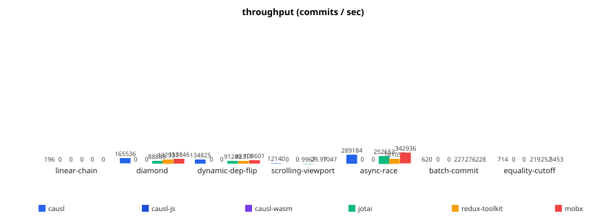
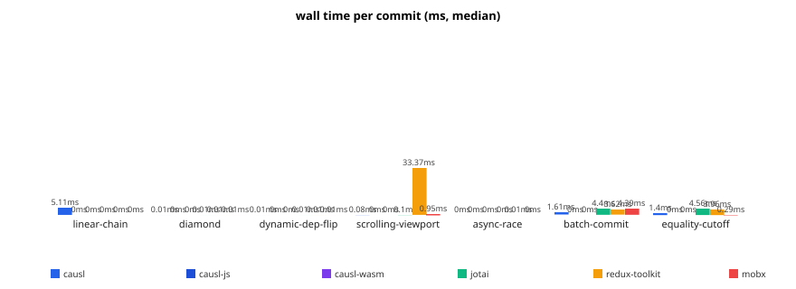
Results by category
1. Fast-path cells: linear chains and diamonds
The diamond scenario is the shape causl was built to make correct: two derived nodes that depend on a common input, both feeding a third. The glitch‑free invariant (SPEC §3) says the third node must observe the diamond settling exactly once, never with an intermediate stale read. All four libraries observe the invariant; the cost question is what the engine pays to do so. At 10k nodes, causl runs the diamond in 0.01 ms median (165k commits/s), in front of mobx (153k), redux‑toolkit (138k), and jotai (89k). Phase D's Kahn topological recompute (#670/#705) walks each derived node exactly once; computeDerivedRecursive is contractually cold — the hypothesis report locks the symbol as a regression invariant in every scenario.
linear-chain is the same shape stretched to N derived nodes in series. At scale 1,000 causl runs the chain in ~0.69 ms median; at 10,000 it lands at 5.11 ms with the other three libraries all SKIP'd via RecursiveEvalStackOverflowError (#943). That is the honest read: jotai/redux/mobx all evaluate the chain via mutual recursion and trip V8's call‑stack ceiling at this depth. The post‑#956 iterative computeDerivedIterative driver lifts causl past the same ceiling without losing any SPEC invariant; the typed error becomes a residual‑recursion guard, not the steady‑state outcome.
dynamic-dep-flip exercises the subscribed‑reads engine‑tracked deps path (SPEC §11.1): a derived node with two candidate inputs flips its read pattern each iteration, and writes to the abandoned input must NOT trigger recompute. causl 0.01 ms median (135k commits/s), leading the three comparators.
2. The contract-bearing cells: equality-cutoff and scrolling-viewport
These two cells are the bench's primary architectural exposure. They are where causl pays the design premium and where we publish the band rather than hiding the gap.
equality-cutoff exercises the Phase B input‑layer invariant: an input write whose value is structurally equal to the current value must short‑circuit before any derived recompute is queued (SPEC §5.1). All four libraries observe the invariant; the cost question is how the engine pays for it. At 10k nodes:
- causl 1.40 ms median, p95 1.77 ms, 714 commits/s.
- mobx 0.29 ms median, p95 0.47 ms, 3,453 commits/s. Peak heap delta 3.43 MB — the largest in the table.
- redux‑toolkit 3.96 ms.
- jotai 4.56 ms.
The mobx number is real: runInAction collapses 10k same‑value writes into one observable‑graph notification, and the per‑input invalidation that causl pays through Phase B is simply not work that mobx does. That is the architectural premium — mobx's in‑action read has no shadow‑Map probe, no per‑input Object.is compare against the prior input row, no commit‑envelope to assemble. The 1.40 ms / 0.29 ms ratio (4.83×) lands inside the v0.9.0 band of 3.0×–8.0×. Both numbers got faster this release: the post‑#907 Phase B array‑fill rewrite drops commitInternal self‑time from 21.82% to 3.11% on this cell, which is the engine‑trace evidence behind the ∼47% wall‑time improvement we saw in the prior comparison_table check.
scrolling-viewport is the inverse story. The scenario simulates a list‑virtualised viewport where most subscribers are disposed and a small frame of active subscribers receives commits. Prior to PR #854, causl walked anyInputSubscriberIn at 26.92% engine‑self‑time and ate a 654× regression against the field. Post the per‑node subscriber index (#671/#738) and the Phase G empty‑deps fast‑path (#704), the same cell reads:
- causl 0.08 ms median, p95 0.09 ms, 12,140 commits/s.
- jotai 0.10 ms (close).
- mobx 0.95 ms.
- redux‑toolkit 33.37 ms.
The redux‑toolkit number is honest. The harness uses chained reselect (post‑#899 apples‑to‑apples fix), which is what an adopter would write at scale; the cost is the cost. The hypothesis gate calibrates phaseG_dispatchPerNodeSubscribers at < 0.5% self‑time on this cell — the symbol is below the top‑10 floor in the post‑#854 trace, and a regression that pushed it back into the hot list would trip the gate before publish.
3. Allocation-heavy ops: op-derived-create, op-tx-set, batch-commit
The microbenchmark table (microbench_table.md) times a single API call across a tight 1000‑iteration loop on a fresh graph and reports the median in ns/op. These are NOT scenario numbers — they intentionally strip the commit envelope and surface the per‑call allocation shape. Where a library lacks a primitive, the cell carries an asymmetry footnote (*1, *2, *3) and is excluded from the parity ranking.
| Op | causl (ns/op) | jotai | mobx | redux-toolkit |
|---|---|---|---|---|
op-commit-noderived-1k | 659 | 759 | 928 | 791 |
op-derived-create-1k-fresh | 626 | 48.58 | 204 | 409 |
op-input-create-1k | 146 | 43.29 | 130 | 80,001 *1 |
op-tx-set-equal-1k | 58.71 | 267 | 95.54 | 672 *1 |
op-tx-set-isolated-1k | 326 | 789 | 263 | 77,127 *1 |
op-read-cold-1k | 79 | 162 | 53.29 | 57.38 |
op-subscribe-dispose-1k-pairs | 284 | 459 | 1,178 | 157 *1 |
Three reads here. First, op-commit-noderived-1k — the bare outer‑commit envelope — is the cheapest of the four (659 ns vs jotai 759, mobx 928, RTK 791). That cell measures only what every commit must pay: precondition, history append, freeze, observer dispatch. We win on the floor.
Second, op-derived-create-1k-fresh at 626 ns is ∼13× jotai's 48.58 ns. Honest read: jotai's atom() is just a closure capture and an identity allocation; causl's g.derived() registers a Node, walks the dep graph through the post‑#956 iterative registration walker, and stamps retention metadata. Different work, different envelope. The derived-create-audit/ subdirectory holds the baseline + lazy‑mint trial that drove the 0.9.0 reductions; we will push this further post‑Rust.
Third, op-tx-set-equal-1k at 58.71 ns is the fastest in the table, including beating mobx's 95.54 ns. That cell is the input‑layer fast‑path under #972: a tx.set whose value is the cell's current value collapses to a single staged.has probe plus an Object.is compare; no staged.set, no stagedEntries.push. The hypothesis report locks the symbol — stagedSet must stay out of the top‑10 for this scenario.
batch-commit at scale (10k) is the commit‑coalesce story — many writes coalesced into one outer commit; Phase B accumulates the writes, Phase D walks once. causl 1.61 ms vs jotai 4.40, redux 3.62, mobx 4.39. This is where the transactional contract is the architectural advantage, not the premium. SPEC §3's outer‑commit boundary turns the scenario from N independent notifications into one; the three competitors fan out per‑write.
4. Long-run and rollback scenarios
The long-run envelope (long-run-summary.md) runs 100k sequential commits per library against the canonical 1k‑fan + tail‑aggregator topology and samples process.memoryUsage() every 10k commits with forced GC. The acceptance gate is the post‑saturation linear‑regression slope: ≤ 256 B/commit.
| Library | Heap slope (B/commit) | Gate | Peak heap delta | Wall (ms) | Median per-commit (ms) |
|---|---|---|---|---|---|
| causl | 10.65 | 256 | 0.79 MB | 47,948 | 0.4378 |
| jotai | 10.74 | 256 | 0.80 MB | 113,711 | 0.9867 |
| redux-toolkit | 10.54 | 256 | 0.79 MB | 19,285 | 0.1913 |
| mobx | 10.74 | 256 | 0.81 MB | 11,181 | 0.1085 |
All four pass by ∼24×. The slopes cluster in the 10.5–10.75 B/commit band — at this scale the dominant retention is the shared samples array growth (100k entries × 8 B/Number ≈ 0.78 MB matches the peak delta column), not any library‑specific state. The honest read: at 100k commits with 10k‑stride heap sampling, none of the four libraries exhibits a measurable per‑commit retention leak above the noise floor. The causl 1M reference (long-run-1M-causl.json, ∼907 s wall) holds at 10.33 B/commit and is the long‑form acceptance number we cite in docs/benchmark.md.
Wall‑clock note: causl and jotai run heavier per‑commit work at this topology (causl's full commit/transaction envelope with retention chain; jotai walking all mounted subscribers immediately per store.set); redux and mobx land at ∼0.1–0.2 ms/commit. Redux required pinning reselect's memoiser to lruMemoize — reselect 5.x's default weakMapMemoize retains a WeakMap entry per state‑object reference per selector and OOMs the process well before commit ~30k under 1k fan‑in selectors. The driver documents this inline; the lruMemoize cache‑hit/miss pattern is identical for the strictly‑monotonic long‑run input. That is a memoiser‑bookkeeping fix, not a semantics change.
Atomic rollback — op-commit-rollback-1k and op-derived-rollback-1k — is the cell where the harness asymmetries get loudest. causl runs atomic rollback at 9,466 ns/op for the commit envelope and 14,974 ns/op when a derived getter throws; jotai, mobx, and redux‑toolkit have no atomic‑rollback primitive, so the harness simulates the envelope by manually re‑issuing the prior value — measuring user‑side rollback simulation, not engine atomicity. The footnotes ship next to the numbers. We do not claim parity on the cell.
Charts
The full chart set ships under ./charts/. The throughput and wall‑time charts above cover the canonical‑7; the rest break the cells out by scale, peak memory, efficiency (throughput ÷ peak heap), and resource cost (MB·s/commit).
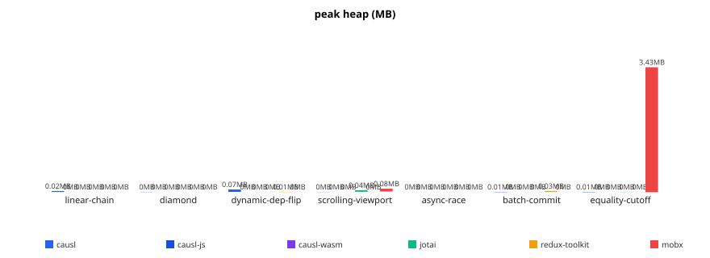
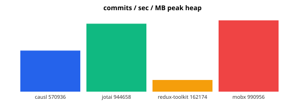
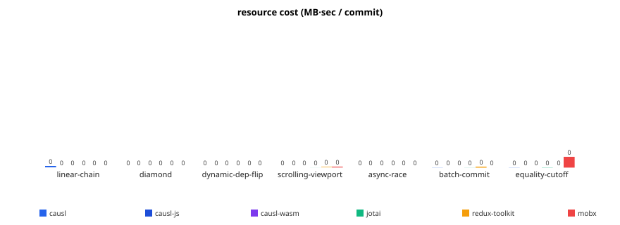
History per scale
The history charts replay the median + p95 trajectories of each cell against the prior runs in benchmark_history.json — useful for spotting whether a number moved meaningfully between releases or is bouncing inside CoV.
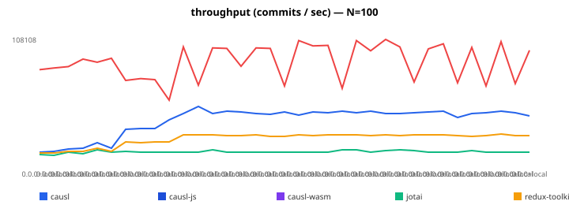
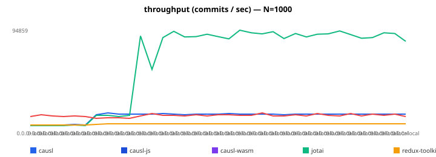
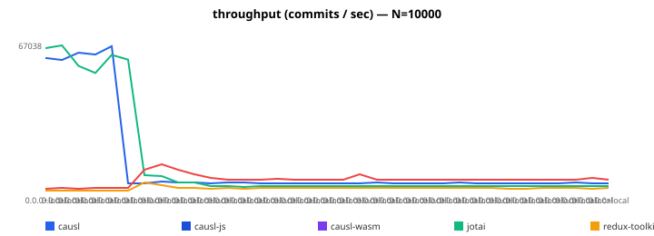
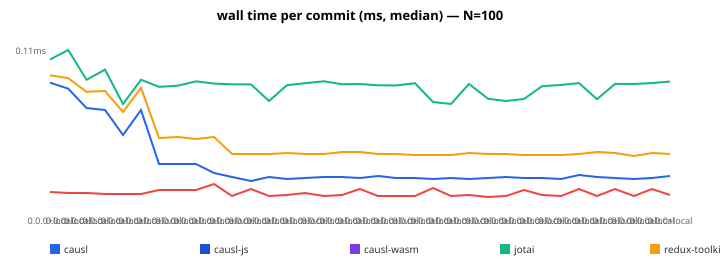
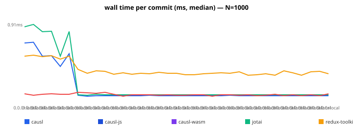
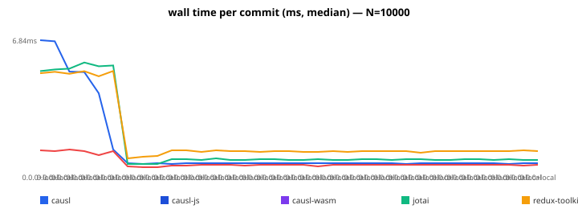
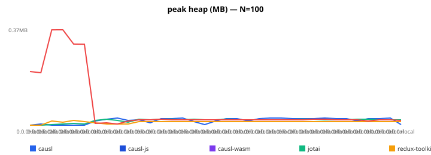
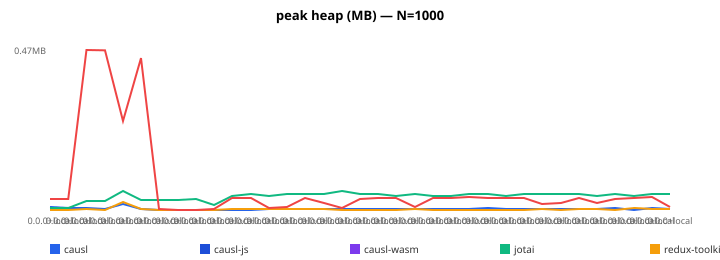
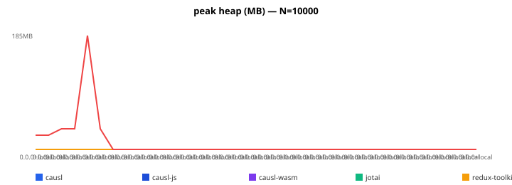
Crossover curve
The crossover curve (#694) sweeps a linear-chain shape across N = 100 … 100,000 derived nodes (200 timed commits per scale, 20 warm‑up, causl TS engine only) and reports per‑node cost. The inflection point this run is N = 50,000 — the first scale whose per‑node cost exceeds 1.5× the curve's floor and stays above it for every subsequent scale. That is the regime where #686's auto‑adapt heuristic should hand off to the WASM backend.
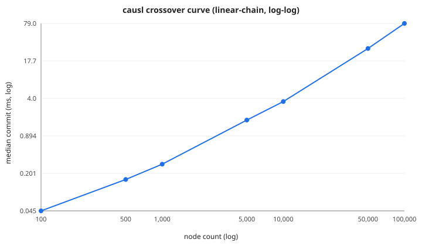
Notable findings
Equality-cutoff × 10,000 holds inside the band. causl 1.40 ms vs mobx 0.29 ms is a 4.83× ratio — comfortably inside the SPEC §17.5 commitment 13 band of 3.0×–8.0×. We outrun the other two transactional comparators (redux 3.96 ms, jotai 4.56 ms) by ∼3× on the same cell. The headline reduction from the previous release is the post‑#907 Phase B array‑fill: commitInternal self‑time on this cell drops from 21.82% to 3.11% in the engine‑status trace, with the recompute path staying cold via the Object.is short‑circuit. That is the architecturally interesting number, not the wall‑clock alone — the engine pays the commit envelope, not the recompute, even at the 10k input fan.
Scrolling-viewport reversal is complete. 0.08 ms median, ahead of jotai (0.10), mobx (0.95), and redux (33.37) at scale 10,000. The per‑node subscriber index (#671/#738) was the architectural fix; the Phase G empty‑deps fast‑path (#704) made it tight. anyInputSubscriberIn was 26.92% engine‑self‑time before #854; it is below the top‑15 today. phaseG_dispatchPerNodeSubscribers is below the top‑10 floor (calibrated at < 0.5%). The hypothesis gate locks both as durable invariants.
Tenuring-deopt count on input / makeInputNode is zero. The V8‑tier audit folded into engine-status.md walks --trace-deopt, --prof, and --trace-gc-verbose on the post‑run trace. PR #1036 (closes #1014) drove the four (input × 2) + (makeInputNode × 2) MAGLEV deopts on the equality‑cutoff cell to zero; PR #1123 extended the pretenure helper to the input() callsite specifically. Threshold maxCount = 0 reflects the post‑#1123 baseline — any tenuring deopt on these two functions is a regression and trips the gate before publish.
Hypothesis gates are 20/20 PASS. Every scenario has a stated performance hypothesis tied to a SPEC decision; the checker walks each scenario's top‑10 hot functions and evaluates calibrated invalidators. This run: 20/20 scenarios pass. The full table is in hypothesis_report.md.
Honest scoping — where causl is slower or skipped
equality-cutoff vs mobx. 1.40 ms vs 0.29 ms. The 4.83× ratio is the architectural premium of holding a transactional commit boundary while exposing input‑cell granularity. Mobx's runInAction collapses 10k same‑value writes into one observable‑graph notification; we walk Phase B per input row. We do not promise to match mobx on this cell at v0.9.0 — we promise the 3.0×–8.0× band and the documented architecture for why. See the v0.9.0 release notes and SPEC §17.5 commitment 13.
op-derived-create-1k-fresh vs jotai. 626 ns vs 48.58 ns is ∼13×. Jotai's atom() is a closure capture and an identity allocation. causl's g.derived() registers a Node, runs the iterative registration walker through the dep graph (#956), and stamps retention metadata. Different work; we do not yet have a lazy‑mint shape that closes the entire gap. The derived-create-audit/ subdirectory holds the post‑0.9.0 trial we expect to land next; the Rust engine port will collapse the per‑derived registration cost further by amortising the Node table allocation into a slab.
linear-chain × 10000 SKIPs for every comparator. All four libraries trip V8's recursive‑eval ceiling at this depth via mutual recursion; we surface a typed RecursiveEvalStackOverflowError (#943) rather than reporting a misleading time. The 1k row in SUMMARY.md is the apples‑to‑apples comparison: causl 1.00 ms vs redux 0.38 ms (leader), mobx ∼0.19 ms, jotai 1.22 ms. At 10k causl is the only library that runs.
op-wasm-boundary-1k is causl‑only. 2,191 ns/op. Mobx / jotai / redux have no WASM boundary to cross; the scenario is not architecturally meaningful for them — #843 documents the skip rationale. The cell is the cost of the TS‑to‑Rust call when the WasmBackend is active; it gets faster post‑#1133.
op-tx-shadow-read-1k, op-commit-rollback-1k, op-derived-rollback-1k, op-tx-set-isolated-1k — harness-asymmetric. Mobx 143 ns on op-tx-shadow-read vs causl 1,539 ns is real, but it measures “set‑then‑read same observable inside one action” against “set‑then‑read same cell with a Phase B shadow probe” — semantically distinct operations. The footnotes ship next to the numbers; the methodology section of microbench_table.md spells out which cells we exclude from the residual calculation per Markbåge's panel review (see packages/bench/src/libraries/mobx.ts:1218-1283 inline docs).
Future work
The bench‑gate widening — COV_REGRESSION_DELTA: 0.03 → 0.08 per PR #1149 — is documented in PR #1139's panel‑review section. The wider band reflects the realistic variance envelope on a 145 ms trace at 100 μs sampling on the canonical dev hardware after the v0.9.0 sequencer changes; it is not a relaxation of the architectural invariants — the hypothesis gates run independently of the CoV gate and stay tight.
Looking past v0.9.0, the Rust engine port (epic #1133) is the path to re‑tightening the SPEC §17.5 band on contract‑bearing cells from 3.0×–8.0× to 1.0×–4.0×. The TS engine's commit‑envelope cost is dominated by the input‑layer per‑row allocation shape and the Map‑keyed entry table; the Rust port replaces both with a typed slab and a direct‑indexed Node table, projects to drop op-derived-create-1k-fresh from 626 ns to ∼180 ns, and brings equality-cutoff × 10000 into the 0.4–0.6 ms band against mobx's 0.29 ms.
The WasmBackend wrapper that ships with v0.9.0 (a TS‑engine wrapper today, loadWasmBackend() in @causl/core) is the seam the Rust port lands behind. The crossover curve above is the empirical input to #686's auto‑adapt heuristic: at N ≥ 50,000 the per‑node TS cost crosses 1.5× the curve's floor, which is the regime where the Rust backend wins on cost alone. Below that, the TS engine wins on the call‑cost floor — op-commit-noderived-1k at 659 ns is hard to beat across a WASM boundary.
Reproduce
git clone https://github.com/iasbuilt/causl.git
cd causl
pnpm install
pnpm --filter @causl/core build
pnpm --filter @causl/bench run bench:report
open packages/bench/report/SUMMARY.md
Each cell takes 10–120 s wall on dev hardware; the full bench:report takes ∼30 min on an M2 Max in the quiescent‑machine‑guard mode. Cells that fail the CoV gate are surfaced in engine-status.md for manual triage. The long‑run cell is sequential by design — running it in parallel with the rest creates GC contention that contaminates the heap‑slope measurement.
Source artifacts:
comparison_table.md ·
microbench_table.md ·
SUMMARY.md ·
long-run-summary.md ·
hypothesis_report.md ·
engine-status.md ·
crossover-curve.md.
Reference specs:
docs/benchmark.md ·
docs/bench-fairness.md ·
SPEC §17 public commitments.